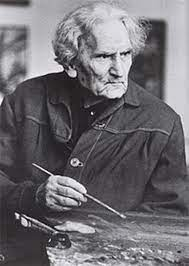
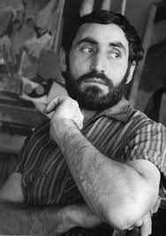

The Armenian painter from America (real name: Vostanik Adoyan)
is considered one of the founders of "abstract surrealism".
Gorky's paintings are exhibited in almost all major US galleries,
as well as in London's Tate Gallery.

Martiros Saryan (1880-1972)
The painter-portraitist developed his
activities during the Soviet years. His art has a huge role
in the development of Armenian painting.

Minas Avetisyan (1904-1948)
A theater artist and painter with more than 1,000 works to his credit,
including paintings, murals and other projects, Minas did for theater performances.